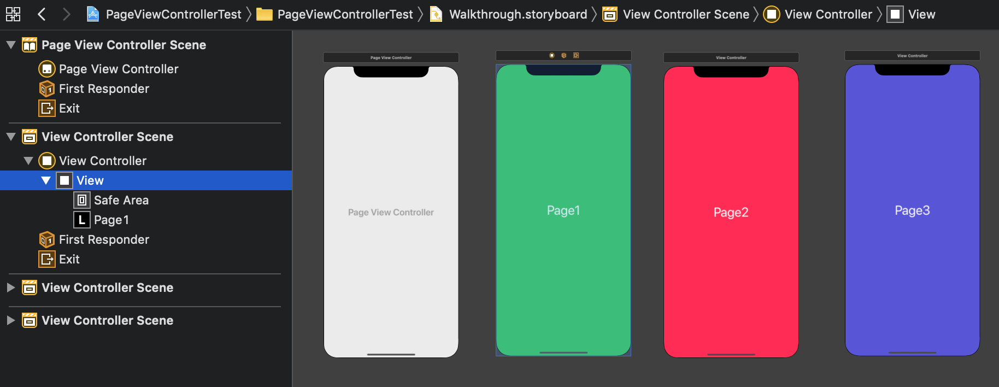
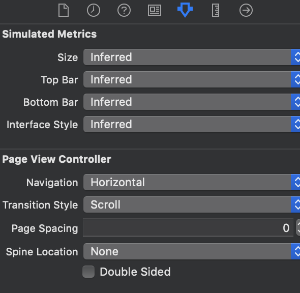
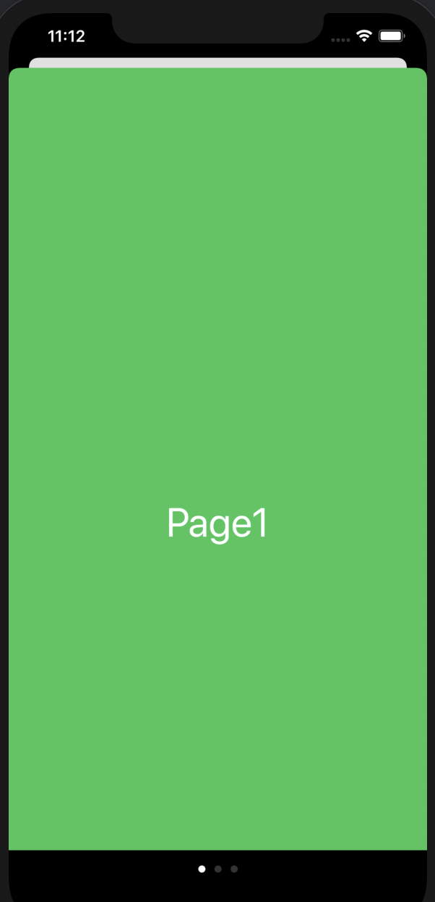
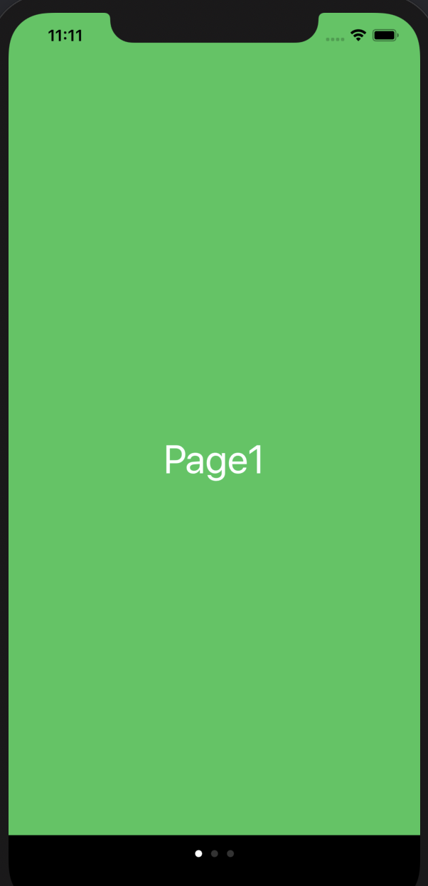

目標
ウォークスルーっぽいものを作る。
- メイン画面でボタンを押すとウォークスルー画面に飛ぶ。
- ウォークスルー画面では、左右にスワイプすると画面が移動する。
- 画面下に、何ページかを教えてくれる白丸(Page Control)を配置する。
登場物
Main.storyboardとViewController.swiftWalkthrough.storyboardとPageViewController.swift
準備
上に書いたものをとりあえず全て作る。ただし、PageViewControllerのサブクラスはUIPageViewControllerであることに注意。
Main.storyboard
ボタンを一つ作っておく。
Walkthrough.storyboard
配置を次のようにする

- Page View Controllerのidentifierは
walkとする。また、classをPageViewControllerにする。
- “Page1"と書かれたViewControllerのidentifierは
page1とする。
- “Page2"と書かれたViewControllerのidentifierは
page2とする。
- “Page3"と書かれたViewControllerのidentifierは
page3とする。
以下で、Transition Styleを"Scroll"とする。もし"Page Curl"とした場合は、ページをめくるようなアニメーションになる。その代わりにPage Controlが表示されない。

PageViewController.swift
次のように書く。
class PageViewController: UIPageViewController {
var controllers: [UIViewController] = []
override func viewDidLoad() {
super.viewDidLoad()
// Do any additional setup after loading the view.
view.backgroundColor = .black
let stb = storyboard!
let page1 = stb.instantiateViewController(withIdentifier: "page1")
let page2 = stb.instantiateViewController(withIdentifier: "page2")
let page3 = stb.instantiateViewController(withIdentifier: "page3")
controllers = [page1, page2, page3]
setViewControllers([controllers[0]], direction: .forward, animated: true, completion: nil)
dataSource = self
}
/*
// MARK: - Navigation
// In a storyboard-based application, you will often want to do a little preparation before navigation
override func prepare(for segue: UIStoryboardSegue, sender: Any?) {
// Get the new view controller using segue.destination.
// Pass the selected object to the new view controller.
}
*/
}
extension PageViewController: UIPageViewControllerDataSource {
func pageViewController(_ pageViewController: UIPageViewController, viewControllerBefore viewController: UIViewController) -> UIViewController? {
if let index = controllers.firstIndex(of: viewController), index-1 >= 0 {
return controllers[index-1]
} else {
return nil
}
}
func pageViewController(_ pageViewController: UIPageViewController, viewControllerAfter viewController: UIViewController) -> UIViewController? {
if let index = controllers.firstIndex(of: viewController), index+1 < controllers.count {
return controllers[index+1]
} else {
return nil
}
}
func presentationCount(for pageViewController: UIPageViewController) -> Int {
return controllers.count
}
func presentationIndex(for pageViewController: UIPageViewController) -> Int {
return 0
}
}
説明
UIPageViewControllerは次のように利用する。
setViewControllersでページをセットする。UIPageViewControllerDataSourceで定義されたメソッドfunc pageViewController(...)を実装して、前ページ、後ページのViewが誰なのかを教える。これによって、スワイプした時にページが切り替わるようになる。UIPageViewControllerDataSourceで定義されたメソッドpresentationCount/presentationIndexを実装して、現在何ページ目なのかを教える。これによって、何ページ目なのかがPageControlによってわかるようになる。
ViewController.swift
次のように書く。Segueを利用しないで遷移する場合は、以下のようにpresentメソッドを利用する。
class ViewController: UIViewController {
override func viewDidLoad() {
super.viewDidLoad()
// Do any additional setup after loading the view.
}
@IBAction func buttonTapped(_ sender: Any) {
let stb = UIStoryboard(name: "Walkthrough", bundle :nil)
let pageVC = stb.instantiateViewController(withIdentifier: "walk")
pageVC.modalPresentationStyle = .currentContext
present(pageVC, animated: true, completion: nil)
}
}
pageVC.modalPresentationStyle = .currentContextとすると、遷移元のViewを覆う形でViewが配置される。
以下はその設定の比較。左は未設定の場合で、右は.currentContextを設定した場合。未設定の場合は、.automaticが設定されている。.automaticは多くの場合.pageSheetというスタイルになっているらしい。


参考